XRP
Ripple- Address
rf82s1CDagppvM6ATqc1nSrL6GackzHJrm- Destination tag / memo
796343731
The destination tag is required. Send XRP to this address with tag 796343731, or the transfer will not be credited. The QR code includes it.
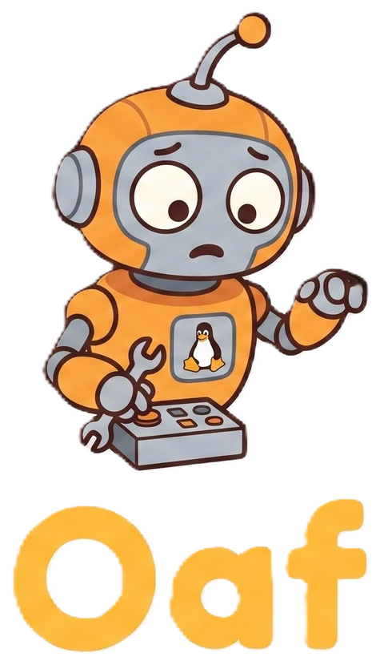
OpenAgentFleetOpen source · MIT · runs on your machines
Every agent gets its own Linux desktop, a mouse and a keyboard. Watch it work live in your browser. Click into the screen and you are driving. Let go and it carries on.
Works beside Claude CodeCodexHermes OpenClaw
OpenClaw
Move your mouse over the desktop to take over.
The trailer
Desktops that drive themselves, an org chart that hands work down, Claude Code, Codex, Hermes and OpenClaw on the same board, and the phone that pings you when an agent is stuck.
Made for sharing: the vertical cut (36 s, 9:16) · the full trailer (mp4)
Perceive
Each turn the agent gets a screenshot with a numbered badge over everything it could click, and the accessibility tree behind them. It reads the screen the way you do, only with labels.
Decide
A thought, a verb, a target. One JSON object under a grammar the model cannot escape. No prose, no tool soup, no “let me try a few things”.
Act
agentd, the only process allowed to touch the mouse, keyboard and framebuffer, carries the action out. Then the loop starts over, screenshot first, for as many windows as the goal takes.
Fleet
Say what you want in one chat and the bots divide it. Builder ships, publishes to the shared catalog and hands to Checker. Checker opens Builder's machine at http://af-2f74f6ae:8000 and reports back. Every bot on its own computer.
Operator
The desktop streams live. Click into it and you are holding the mouse; let go and the agent carries on. A weird dialog takes you two seconds. Want to teach it the task? Do it once with the recorder on.
Models
Point the fleet at Ollama, llama.cpp, LM Studio or vLLM on your own hardware and a run costs $0.00. Cloud models plug in behind the same interface with per-turn cost accounting. Mix them by role: one model for vision, another to reason, a cheap one to summarise.
# SKILL.md — Export the monthly sales report 1. focus "Odoo — Mozilla Firefox" 2. click "Reporting" # role: link 3. click "Sales" # role: menu item 4. key ctrl+f · type "August" 5. click "Export" # role: button 6. wait_for "Download complete"
Teach by doing
Turn the recorder on and do the task yourself in the agent's desktop. Every click, keystroke and the accessible element behind it is captured and compiled into a skill the agent follows next time, by label rather than by pixel, so a moved button does not break it.
Companion app
A CAPTCHA, an MFA prompt, a payment screen: the agent parks the task and pings your phone with the screen frozen at that moment. Answer from the lock screen and it resumes. The same fleet chat, sessions and voice mode are in your pocket, with Oaf.
fleetctl host.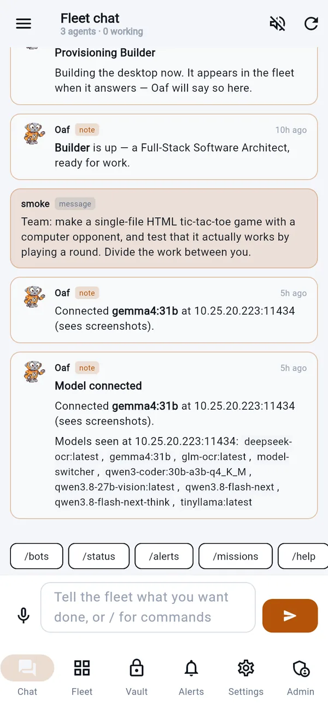
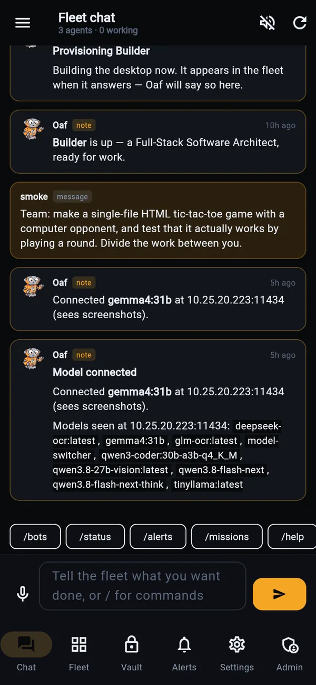
Frozen at step 41. Approve, take over, or tell it what to do.
Org chart and tickets
Agents report to each other, and work is tickets with an owner. Ask the fleet for something and every part becomes a ticket that waits on what it needs, with the reason it matters in its brief. Stuck work goes to the agent's manager, then to you.
Bring your agents
The agents you already use join beside the desktops this fleet provisions. They sit in the org chart, take tickets, review each other's work and report what they cost, and each one runs as itself.
claude --printcodex exechermes chat -qws · protocol 4POST + callbackwatch · take overfleetctl host finds the CLIs on your PC; each agent works in a folder you pick, and asks in your terminal before a run unless you say otherwise.Claude, Codex, Hermes Agent and OpenClaw are trademarks of their respective owners. OpenAgentFleet is not affiliated with them.
Security
Every stored credential is sealed with AES-256-GCM under one master key you hold. Agents borrow a session, never a password. Each desktop is a container under cgroup limits with swap off, an optional GPU, and an optional egress policy in its own network namespace.
Read the threat model: what the isolation is worth, and what it is not.
The console
A real XFCE session in a hardened container, streaming into the console, and the org chart, the Work board and the agents you bring, as they are. Fleet, recording studio, engine chain and resolution centre live beside them.
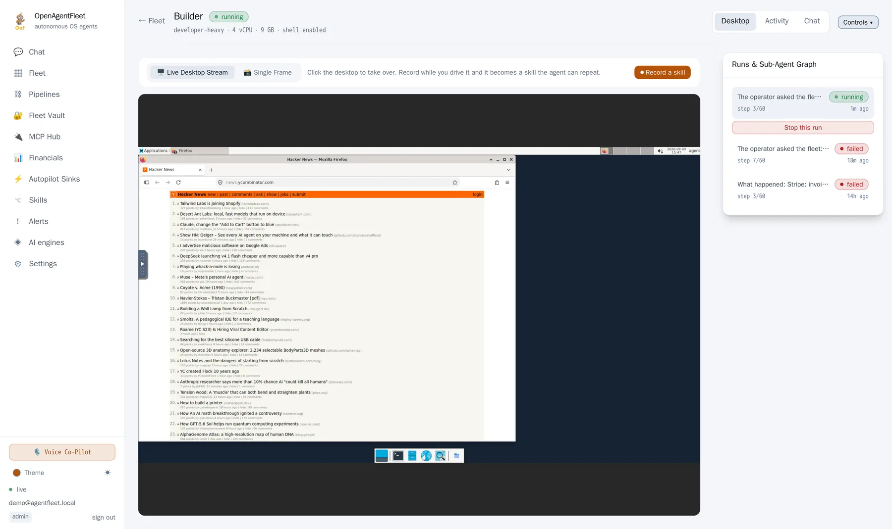
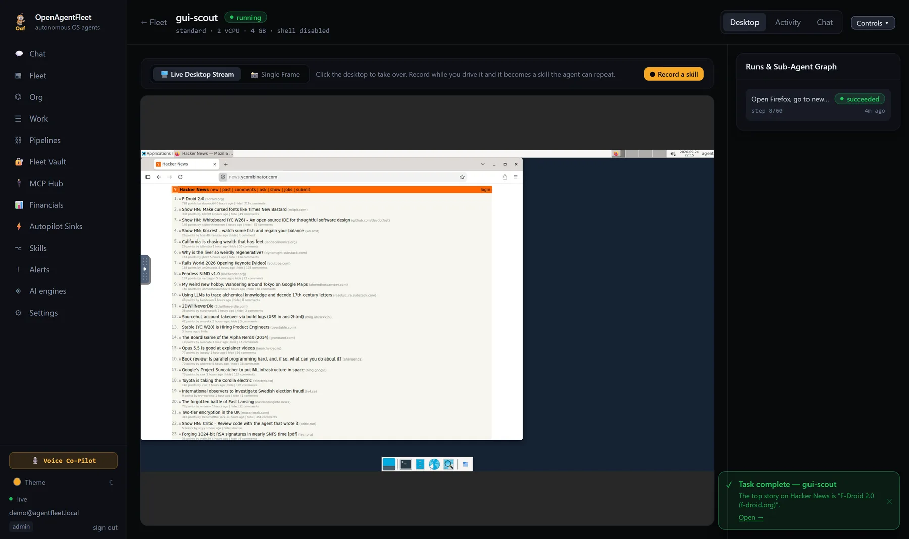
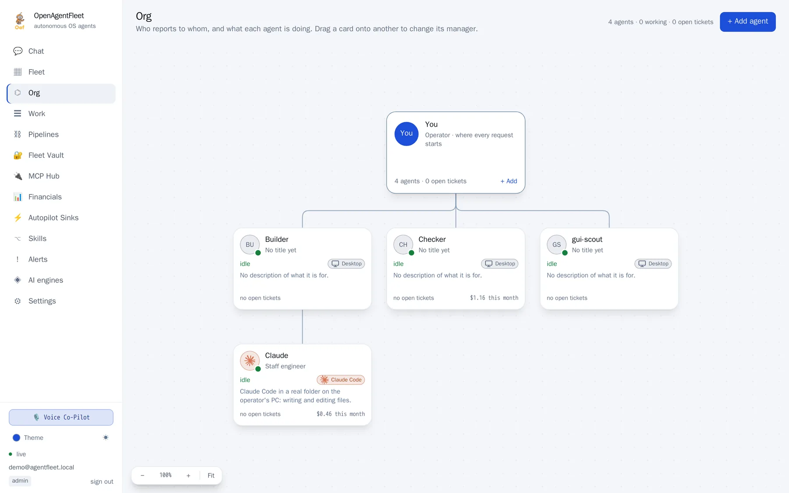
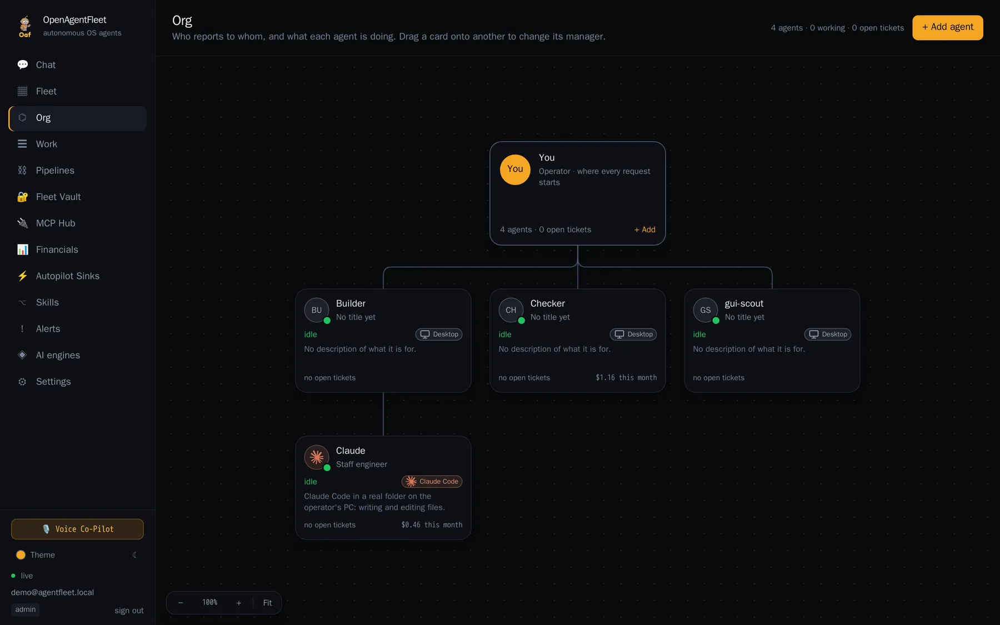
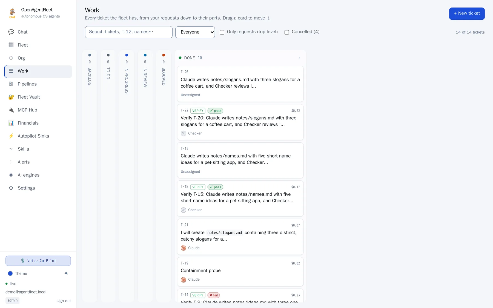
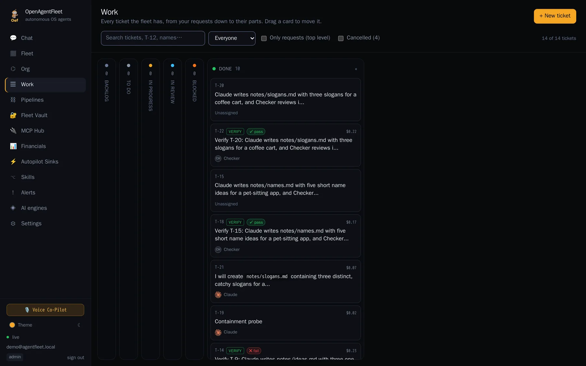
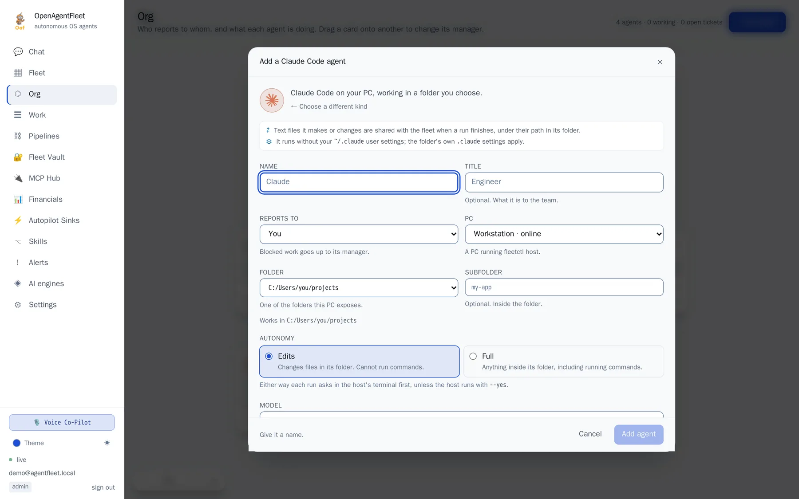
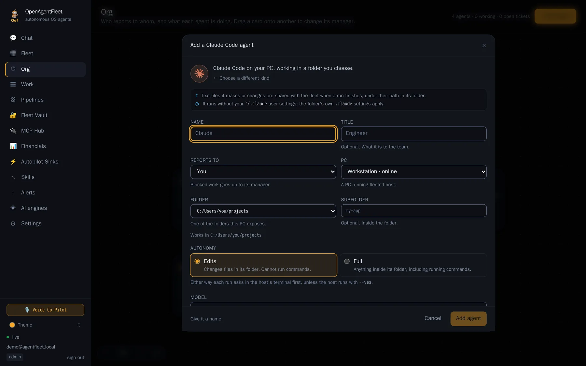
Get started
You need Docker with Compose v2 and make. Everything else runs in containers, including the sandbox image it builds for you.
$ git clone https://github.com/BryantVanOrden/OpenAgentFleet.git $ cd OpenAgentFleet $ make doctor && make env && make up
Then open http://localhost:8081, connect a model, launch an agent.
$ pip install open-agent-fleet $ fleetctl host --root ~/projects
Attach your own PC for sessions with Oaf and for the agents that live on it. It asks in your terminal before running a command or writing a file.
$ fleetctl agent add Claude --kind claude_code \ --folder ~/projects/app --reports-to Builder $ fleetctl ticket new "Fix the login test" \ --to Claude --review-by Checker
Or --kind codex, hermes, openclaw, webhook. Also from the console: Org → Add agent.
Support the project
OpenAgentFleet is free and open source. If it is useful to you, you can support development with XRP or Bitcoin. Every bit goes into more agents, more testing and more hours on it.
rf82s1CDagppvM6ATqc1nSrL6GackzHJrm796343731The destination tag is required. Send XRP to this address with tag 796343731, or the transfer will not be credited. The QR code includes it.
bc1qvre807vxh08puxwc2z5adnm59tta7v5mqmky45No memo or tag needed. Scan the code or paste the address into your wallet.
Starring the repository and telling someone about it helps too.